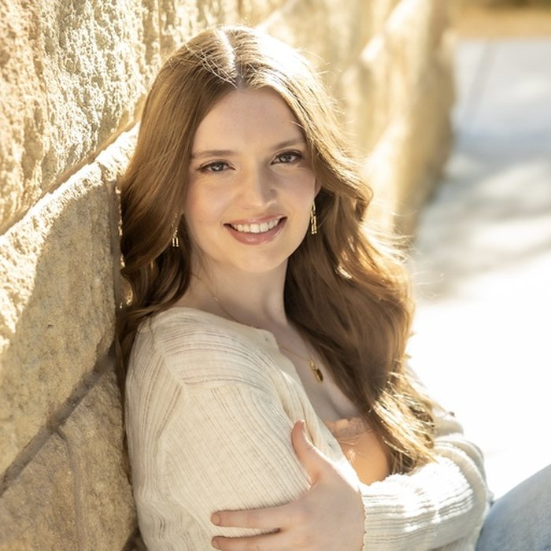
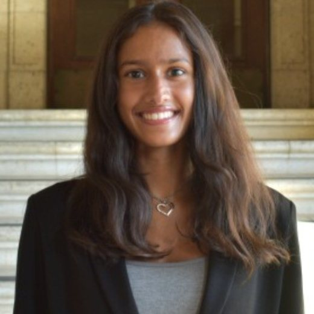
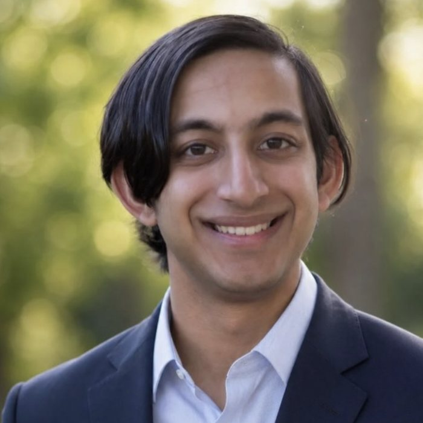
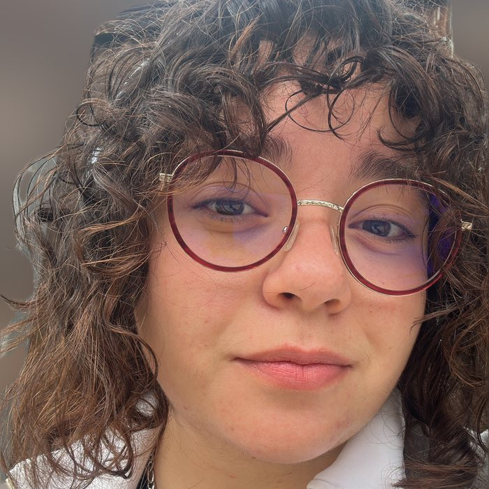
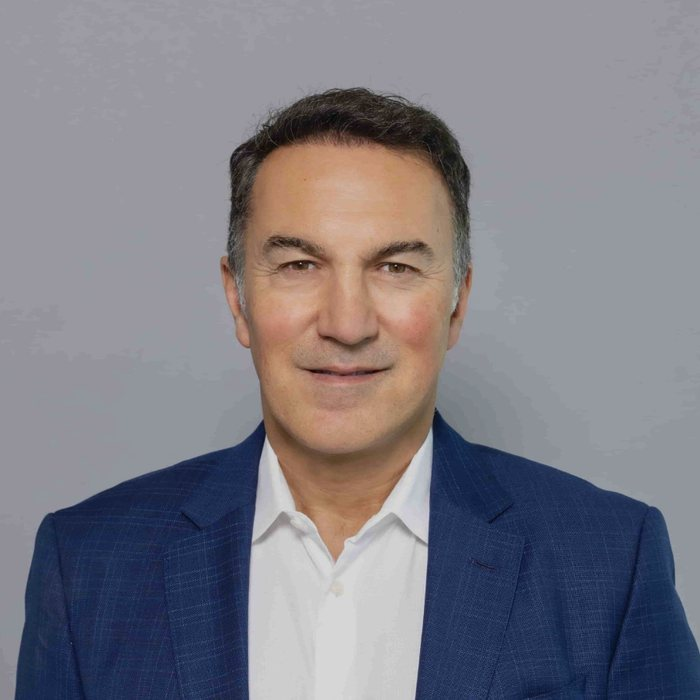
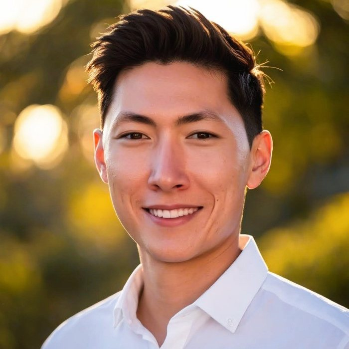

Skip to main content
About
Research
People
Publications
Events
Contact
Apply
Our team
Operations
Shree Rao
President of Operations
Shree Rao
B.S. Neuroscience, class of 2029. Jefferson Scholar in the Program of Core Texts and Ideas. Studies cognitive control and reading development in late childhood at the Developmental Cognitive Neuroscience Lab.

Rebekah King
Vice President of Education
Rebekah King
B.A. Psychology, class of 2029. Liberal Arts Honors, with a minor in Law, Justice and Society and a certificate in Core Texts and Ideas through the Jefferson Center. Studies the behavioural, demographic and linguistic factors behind early investigative bias at the DynamiCog Lab in the Department of Psychology.

Dhaarini Ravisha
Vice President of Finance
Dhaarini Ravisha
B.B.A., class of 2029, at the McCombs School of Business. Student technician on the College of Education's technology service desk, and a marketing intern with Indian Dance Endeavor of Austin.
Research
Donovan Santine
President of Research
Donovan Santine
B.S. Biomedical Engineering Honors, class of 2028. Designs ear-EEG electrodes and event-related potential paradigms in Dr. José del R. Millán's Clinical Neuroprosthetics and Brain Interaction Lab. Co-founder and CTO of MoltGrid, an open-source AI agent infrastructure platform.

Shiv Desai
Research Lead
Shiv Desai
B.S. Computer Science and B.S. Neuroscience, class of 2027, in the Neuroscience Scholars program. Builds synthetic fMRI scans with independent component analysis and generative models in the Department of Neuropsychiatry and Neuromodulation at Harvard Medical School and Massachusetts General Hospital, and works on machine learning for neuronal trait prediction in the Department of Neurology at Dell Medical School.

Alex Mikhael
Research Lead
Alex Mikhael
PhD candidate in electrical and computer engineering, developing brain-computer interfaces and stimulation protocols for attention, decision making and error perception in Dr. José del R. Millán's Clinical Neuroprosthetics and Brain Interaction Lab. M.S. from UC San Diego, with earlier work on real-time cortical mapping for 1024-channel ECoG grids at the Integrated Electronics and Biointerfaces Laboratory.
Advisors

Dr. Amir Vokshoor
Founder, Institute of Neuro Innovation
Dr. Amir Vokshoor
Founder and president of the Institute of Neuro Innovation, the foundation this chapter belongs to. Board-certified neurosurgeon, spine surgery subsection chief at Providence Saint John's Health Center in Santa Monica and director of neuroscience at West Hills Hospital. MD with honours from the Medical College of Virginia, residency at Ohio State University Hospitals, and complex spine fellowship training at the University of South Florida.
Dr. Jordan Amadio
Faculty Advisor for Research
Dr. Jordan Amadio
Full-time faculty in the Department of Neurosurgery at
Dell Medical School
. Board-certified neurosurgeon, NIH-funded investigator in Texas Robotics, and co-founder of the NeuroLaunch incubator. Director of neurosurgery at Neuralink and chief of spinal neurosurgery at the Olympia Neurological Institute. MD from Harvard Medical School, MBA from Harvard Business School.
Sidney Harris
Faculty Advisor for Operations
Sidney Harris
B.S. in Neuroscience from UT Austin, class of 2026. Former president of UT Synapse. Currently a teaching assistant at the university.

PK Tan
Technical Advisor
PK Tan
PhD candidate in neuroscience, working on read-write cortical interfaces in Dr. Eyal Seidemann's lab. Combined wide-field calcium imaging with optogenetics to show that stimulating a single cortical column is enough to drive feature-specific perception. B.Sc. in Life Sciences, summa cum laude, from the National University of Singapore.